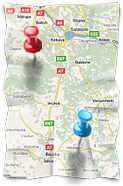
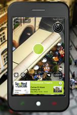

Localização (GPS)(){
i++

Realidade Aumentada no volante!
Já imaginou estar passeando pelas ruas da Europa e querer informações sobre algum lugar que você vê, como por exemplo, a Torre Eiffel em Paris ou a Ponte do Milênio em Londres? Ou até mesmo olhar para o GPS e, além da estrada à sua frente, ver o trajeto a ser traçado? Bem, para isso você apenas aponta seu iPhone para o local e ele traz a informação que precisa. Filme de ficção científica? Não mais. Estamos falando dos aplicativos para iPhone 3GS Wikitude e do Layar.
Desenvolvido para o sistema Android, o Wikitude utiliza a câmera integrada do celular e o sistema de mapeamento e tráfego da Navteq, criando na tela a imagem do trajeto que o motorista deve percorrer. O percurso é traçado por cima da imagem gravada ao vivo das ruas, misturando o real com o virtual. É mesma sensação de olhar para o parabrisa e ver a estrada normalmente, só que com o tracejado marcando o caminho a ser tomado.
A vantagem do Wikitude se deve à sobreposição da imagem virtual no ambiente real. Ao invés de olhar para um simples mapa, o motorista olha para o que está realmente a sua frente, o que permite maior facilidade e naturalidade no reconhecimento do percurso sugerido pelo sistema. Uma outra vantagem do dispositivo é que frequentemente o condutor perde muito tempo ao consultar o mapa do GPS. Segundo o site do Wikitude, se um motorista olhar para o GPS por apenas 1 segundo dirigindo a 100 km/h, ele desloca de até 28 metros sem olhar para a estrada. Essa pequena distração pode levar o condutor a ganhar uma multa por passar em um sinal vermelho, ou até mesmo ser fatal em um acidente de trânsito. O aplicativo então se torna muito útil já que, de acordo com o portal G1, só em São Paulo a distração no volante é a 4ª causa de acidentes e multas de trânsito, sendo um dos principais fatores o uso de GPS.
Além da função de guia, o Wikitude também possui um serviço de reconhecimento de ambientes. Ao apontar o dispositivo a determinados lugares, o sistema traz, instanteneamente, informações sobre o local na tela do celular. As informações são retiradas da enciclopédia livre "Wikipedia", que incorpora a colaboração entre usuários. É possível também adicionar na lista de favoritos do software os lugares que você acha interessante, basta escolher dentre os locais disponíveis no Wikitude.me. Veja no vídeo abaixo um vídeo demonstrativo do wikitude:

Imagem de divulgação do Layar. Obtida de Layar.com
Layar!
Com uma interface simples e interativa, o Layar faz o mesmo que seu rival "Wikitude", mas com alguns recursos a mais. O software consegue fazer com que seu usuário tenha sempre em mãos a informação que precisa, ao apontar o aparelho para determinados locais, ele procura informações sobre os serviços disponíveis próximos a localização de quem o utiliza, mostrando o resultado na tela do dispositivo. Com o Layar, é possível também marcar um local como favorito, limitar a distância de busca dos serviços e mostrar os locais mais populares. Incrível não? Assim ninguém esquece daquele restaurante que foi e adorou, ou daquela sorveteria que é a mais gostosa da região.
}